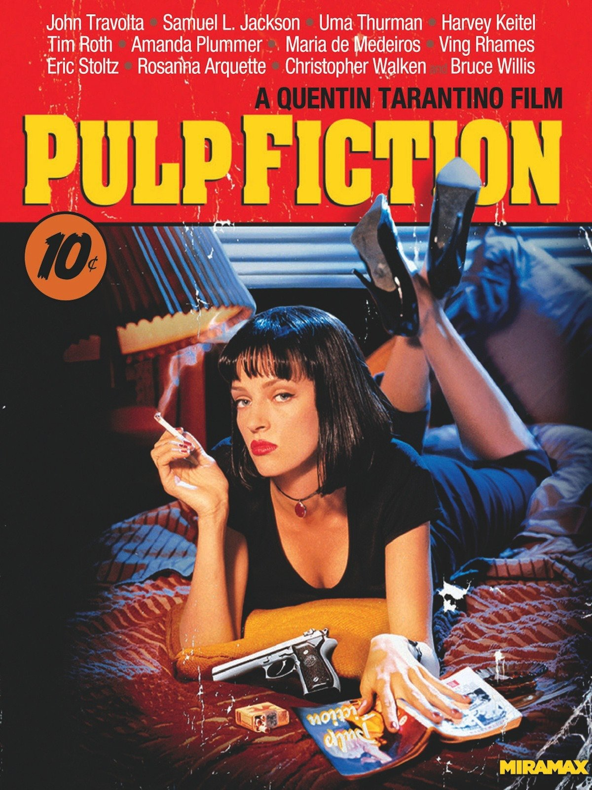

Pulp Fiction
Pulp Fiction is a 1994 American crime film written and directed by Quentin Tarantino, based on a story by Tarantino and Roger
Avary, and starring John Travolta, Samuel L. Jackson, Bruce Willis, Ving Rhames, and Uma
Thurman. The film tells a few stories of criminal Los Angeles. The film's title refers to
the pulp magazines and hardboiled crime novels popular during the mid-20th century, known
for their graphic violence and punchy dialogue.

Inglourious Basterds
Inglourious Basterds is a 2009 war film written and directed by Quentin Tarantino and starring Brad Pitt, Christoph Waltz,
Michael Fassbender, Eli Roth, Diane Kruger, Til Schweiger, and Mélanie Laurent. The film
tells the alternate history story of two plots to assassinate Nazi Germany's leadership,
one planned by Shosanna Dreyfus (Laurent), a young French Jewish cinema proprietor, and the
other by a team of Jewish American soldiers led by First Lieutenant Aldo Raine (Pitt). Christoph
Waltz co-stars as Hans Landa, an SS colonel tracking down Raine's group who is connected
to Shosanna's past. The film's title was inspired by Italian director Enzo G. Castellari's
macaroni combat film The Inglorious Bastards (1978).
The Hateful Eight
The Hateful Eight (often marketed as The H8ful Eight) is a 2015 American Western film written and directed by Quentin Tarantino.
It stars Samuel L. Jackson, Kurt Russell, Jennifer Jason Leigh, Walton Goggins, Demián Bichir,
Tim Roth, Michael Madsen, and Bruce Dern as eight strangers who seek refuge from a blizzard
in a stagecoach stopover some time after the American Civil War.
La La Land
La La Land is a 2016 American musical romantic comedy film written and directed by Damien Chazelle. It stars Ryan Gosling
as a jazz pianist and Emma Stone as an aspiring actress, who meet and fall in love in Los
Angeles while pursuing their dreams. The film's title refers simultaneously to the city of
Los Angeles and the idiom for being out of touch with reality.
Forrest Gump
Forrest Gump is a 1994 American romantic drama film based on the 1986 novel of the same name by Winston Groom. The film was
directed by Robert Zemeckis and stars Tom Hanks, Robin Wright, Gary Sinise, Mykelti Williamson,
and Sally Field. The story depicts several decades in the life of its titular character (Hanks),
a slow-witted but kind-hearted, good-natured and athletically prodigious man from Alabama.
Gump witnesses, and in some cases influences, some of the defining events of the latter half
of the 20th century in the United States, specifically the period between his birth in 1944
and 1982. The film differs substantially from Winston Groom's novel, including Gump's personality
and several events that were depicted.
Grave of the Fireflies
Grave of the Fireflies (火垂るの墓 Hotaru no Haka) is a 1988 Japanese anime film based on the 1967 semi-autobiographical short
story of the same name by Akiyuki Nosaka. It was written and directed by Isao Takahata, and
animated by Studio Ghibli for the story's publisher Shinchosha Publishing (making it the
only Studio Ghibli film under Tokuma Shoten ownership that had no involvement from them).
The film stars Tsutomu Tatsumi, Ayano Shiraishi, Yoshiko Shinohara and Akemi Yamaguchi. Set
in the city of Kobe, Japan, the film tells the story of two siblings, Seita and Setsuko,
and their desperate struggle to survive during the final months of the Second World War.
Mad Max Fury Road
Mad Max: Fury Road is a 2015 action film co-written, produced, and directed by George Miller. Miller collaborated with Brendan
McCarthy and Nico Lathouris on the screenplay. The fourth installment and a reboot of the
Mad Max franchise, it is a joint Australian-American venture produced by Kennedy Miller Mitchell,
RatPac-Dune Entertainment, and Village Roadshow Pictures. The film is set in a post apocalyptic
desert wasteland where petrol and water are scarce commodities. It follows Max Rockatansky
(Tom Hardy), who joins forces with Imperator Furiosa (Charlize Theron) to flee from cult
leader Immortan Joe (Hugh Keays-Byrne) and his army in an armoured tanker truck, leading
to a lengthy road battle. The film also features Nicholas Hoult, Rosie Huntington-Whiteley,
Riley Keough, Zoë Kravitz, Abbey Lee, and Courtney Eaton.
Spider-Man: Homecoming
Spider-Man: Homecoming is a 2017 American superhero film based on the Marvel Comics character Spider-Man, co-produced by
Columbia Pictures and Marvel Studios, and distributed by Sony Pictures Releasing. It is the
second Spider-Man film reboot and the sixteenth film in the Marvel Cinematic Universe (MCU).
The film is directed by Jon Watts, from a screenplay by the writing teams of Jonathan Goldstein
and John Francis Daley, Watts and Christopher Ford, and Chris McKenna and Erik Sommers. Tom
Holland stars as Peter Parker / Spider-Man, alongside Michael Keaton, Jon Favreau, Zendaya,
Donald Glover, Tyne Daly, Marisa Tomei, and Robert Downey Jr. In Spider-Man: Homecoming,
Peter Parker tries to balance high school life with being Spider-Man, while facing the Vulture.
Lars and the real girl
Lars and the Real Girl is a 2007 comedy-drama film written by Nancy Oliver and directed by Craig Gillespie. It stars Ryan
Gosling, Emily Mortimer, Paul Schneider, Kelli Garner, and Patricia Clarkson. The film follows
Lars (Gosling), a sweet but socially awkward young man who develops a romantic yet platonic
relationship with an anatomically correct sex doll, a "RealDoll" named Bianca.
Slumdog Millionaire
Slumdog Millionaire is a 2008 British drama film directed by Danny Boyle, written by Simon Beaufoy, and produced by Christian
Colson. Set and filmed in India, it is a loose adaptation of the novel Q & A (2005) by Indian
author and diplomat Vikas Swarup, telling the story of Jamal Malik, age 18, from the Juhu
slums of Mumbai. As a contestant on the Indian version of Who Wants to Be a Millionaire?
who is able to answer every stage correctly, as a result he is accused of cheating. Jamal
recounts his history, illustrating how he is able to answer each question.

WALL-E
WALL-E (stylized with an interpunct as WALL·E) is a 2008 American computer-animated science fiction film produced by Pixar
Animation Studios for Walt Disney Pictures. It was directed and co-written by Andrew Stanton,
produced by Jim Morris, and co-written by Jim Reardon. It stars the voices of Ben Burtt,
Elissa Knight, Jeff Garlin, Fred Willard, John Ratzenberger, Kathy Najimy, Sigourney Weaver,
and the MacInTalk system, and was the overall ninth feature film produced by the company.
It follows a trash compactor robot in a deserted world, left to clean a largely abandoned
city. However, he is visited by a probe sent by the Axiom ship, whom he falls in love with
and pursues across the galaxy.
Birdman
Birdman or (The Unexpected Virtue of Ignorance), commonly known simply as Birdman, is a 2014 American dark comedy film directed
by Alejandro G. Iñárritu. It was written by Iñárritu, Nicolás Giacobone, Alexander Dinelaris
Jr., and Armando Bo. The film stars Michael Keaton with a supporting cast of Zach Galifianakis,
Edward Norton, Andrea Riseborough, Amy Ryan, Emma Stone, and Naomi Watts. The story follows
Riggan Thomson (Keaton), a faded Hollywood actor best known for playing the superhero "Birdman",
as he struggles to mount a Broadway adaptation of a short story by Raymond Carver.